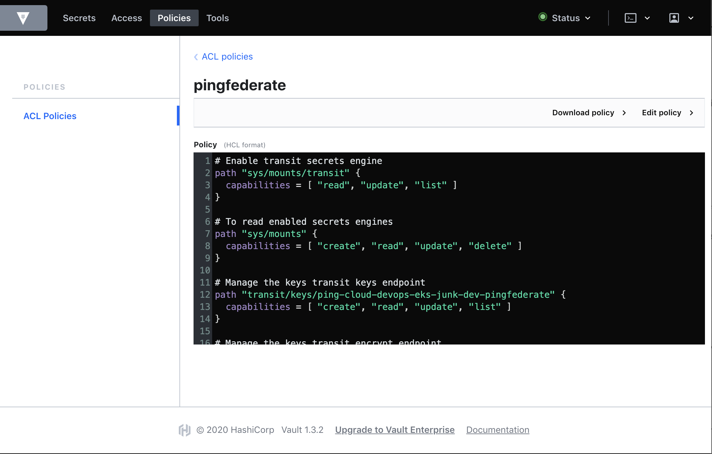

Deploying Hashicorp Vault ¶
This is an example of deploying Hashicorp Vault (Vault) with PingFederate and PingAccess to manage their corresponding master keys (pf.pwk and pa.pwk). Using Vault, you can also manage license files, DevOps keys, product secrets, and others.
Before you begin ¶
You must:
- Complete Get started to set up your DevOps environment and run a test deployment of the products.
- Have access to Vault.
- Have access to Helm. Vault uses Helm 3.
- Have Kubernetes 1.7.
- Have OpenSSL or your favorite PKI tool.
- Pull our pingidentity-getting-started repo to ensure you have the latest sources.
About this task ¶
You'll clone the Vault Helm chart to deploy a near-production environment to validate and manage the product master keys, product secrets, and authentication policies.
Deployment architecture ¶
The following image illustrates the specific configuration items we are using for this deployment. Additionally, you'll deploy Vault into Amazon Elastic Kubernetes Service (EKS) and using some of Amazon Web Service (AWS)'s specific services (AWS KMS and AWS DynamoDB) to help simplify the deployment architecture.

Enabling TLS ¶
Before you deploy Vault using Helm, you must add the TLS key pair (public and private keys) and certficate authority (CA) chain files as a Kubernetes secret. The public certificate and private key need to be separate files. You can either use OpenSSL to quickly create a self-signed certificate, or use one signed by your CA.
If you're using a self-signed certificate, the public certificate is also the CA certificate.
-
Create the Kubernetes secret using Vault, the TLS key pair, and the certificate:
kubectl create secret generic vault-certstore \ --from-file=vault.key=<local_path_to_tls_key>/tls.key \ --from-file=vault.crt=<local_path_to_tls_cert>/tls.crt \ --from-file=vault.ca=<local_path_to_ca_cert>/vault.ca -
Ensure that these parameters in the
values.yamlfile located in your localpingidentity-devops-getting-started/20-kustomize/08-vault/vault-helmdirectory are set as follows:-
global:Enable TLS globally:
global: tlsDisable: false -
extraEnvironmentVars:Set the environment variable that will contain the path to the CA certificate used for TLS.
extraEnvironmentVars: VAULT_CACERT: /vault/userconfig/vault-certstore/vault.ca -
extraVolumes:Set the volume mount for the certificate store secret. This mount will contain the TLS public certificate, private key, and CA certificate.
extraVolumes: - type: secret name: vault-certstore -
ha:Set Vault to use high-availability (HA) mode. Vault uses Hashicorp Consul for its storage backend. The default configuration provided will work with the Consul (Helm) project by default. You can also manually configure Vault to use a different HA backend.
ha: enabled: true replicas: 3 # Add the following parameters to the `listener "tcp"` element to enable TLS: config: | ui = true log_level = "Debug" listener "tcp" { tls_disable = 0 address = "[::]:8200" cluster_address = "[::]:8201" tls_cert_file = "/vault/userconfig/vault-certstore/vault.crt" tls_key_file = "/vault/userconfig/vault-certstore/vault.key" tls_client_ca_file = "/vault/userconfig/vault-certstore/vault.ca" }
-
Storage Backend ¶
You can take advantage of some AWS services to simplify your deployment architecture. The Vault Helm chart has examples for using files or an existing Consul deployment. Here, we'll update Vault's HA deployment to use AWS DynamoDB.
-
Create an AWS access key and secret with permissions to manage the dynamodb.
You'll find the permissions that the Vault IAM user requires to manage dynamodb in the Vault documentation Required AWS Permissions.
Vault will create the necessary table in dynamodb if it does not already exist.
See the Vault documentation DynamoDB Storage Backend for additional parameters when using dynamodb as a storage mechanism.
-
Add your AWS access and secret key as a Kubernetes secret:
kubectl create secret generic dynamodb-access-secret-keys \ --from-literal=AWS_ACCESS_KEY_ID=<your_aws_access_key> \ --from-literal=AWS_SECRET_ACCESS_KEY=<your_aws_access_key_secret> -
Update the
values.yamlfile to include your AWS key and secret within theextraSecretEnvironmentVarssection.Kubernetes can provide the secrets as environment variables that Vault can use, so you don't accidentally expose the secret outside of Kubernetes.
extraSecretEnvironmentVars: - envName: AWS_SECRET_ACCESS_KEY secretName: dynamodb-access-secret-key secretKey: AWS_SECRET_ACCESS_KEY - envName: AWS_ACCESS_KEY_ID secretName: dynamodb-access-secret-key secretKey: AWS_ACCESS_KEY_ID -
In the
hasection, update thedynamodbstorage element with your corresponding AWS region and dynamodb table name:storage "dynamodb" { ha_enabled = "true" region = "<aws_region>" table = "<dynamodb_table_name>" }
Auto Unseal ¶
To keep things simple, use Vault's Auto Unseal with the AWS Key Management Service (KMS).
You must set up your existing AWS access key and secret with the correct permissions. Because we're using dynamodb for backend storage, you'll also add the permissions to your AWS access key.
For more information, see the Vault documentation AWS KMS authenticationn.
Vault can retrieve the AWS KMS key using an environment variable so that it's not accidentally exposed outside of the Kubernetes environment.
-
Add the KMS key as a Kubernetes secret:
kubectl create secret generic aws-kms-key-id \ --from-literal=KMS_KEY_ID=<your_key_id> -
Update the
values.yamlfile to include your AWS key and secret in theextraSecretEnvironmentVarssection:extraSecretEnvironmentVars: - envName: VAULT_AWSKMS_SEAL_KEY_ID secretName: aws-kms-key-id secretKey: KMS_KEY_ID -
In the
hasection config map (config), add asealelement, and update the region parameter with your AWS region value:seal "awskms" { region = "<aws_region>" }
Deploying Vault using Helm ¶
For complete information, see the Vault documentation for Kubernetes.
-
Go to your local
pingidentity-devops-getting-started/20-kustomize/08-vault/vault-helmdirectory and enter:helm install vault /.Information similar to the following is displayed:
NAME: vault LAST DEPLOYED: Thu Mar 12 17:27:19 2020 NAMESPACE: ping-cloud-devops-eks STATUS: deployed REVISION: 1 TEST SUITE: None NOTES: Thank you for installing HashiCorp Vault! Your release is named vault. To learn more about the release, try: $ helm status vault $ helm get vault -
If this is the first time you've deployed Vault in this environment, you must initialize it. Enter:
kubectl exec vault-0 -- vault operator initIf the initialization is successful, you receive the recovery keys and Initial Root token. Make sure you store the recovery keys and root token in a secure location. Information similar to the following is displayed:
Recovery Key 1: <key_1> Recovery Key 2: <key_2> Recovery Key 3: <key_3> Recovery Key 4: <key_4> Recovery Key 5: <key_5> Initial Root Token: <root_token> Success! Vault is initialized Recovery key initialized with 5 key shares and a key threshold of 3. Please securely distribute the key shares printed above.
Pod Authentication ¶
Our products and applications must have a Vault client token to authenticate to Vault. Because we're using Kubernetes, we can use Vault's Kubernetes auth method.
When the Kubernetes auth method is enabled, Vault can use a pod's Kubernetes service account token to authenticate and exchange for a Vault client token. The Vault client token is associated with a particular role with permissions to perform certain Vault operations.
-
Attach to the namespace where the Vault will be deployed:
kubens ping-cloud-devops-eks-vaultVault's cluster role binding creates a service account
vaultto perform delegated authentication and authorization checks. This service account is used by the Kubernetes authentication mechanism to allow authentication by other applications. -
Retrieve the service account secret name and set the environment variable
SA_SECRET_NAME:export SA_SECRET_NAME=$(kubectl get serviceaccounts vault -o jsonpath="{.secrets[].name}") -
Save the service account CA certificate, Kubernetes cluster API hostname, and the service account token to environment variables.
These variable values will be used in the Kerberos auth method configuration.
-
Save the service account CA certificate:
export SA_CA_CRT=$(kubectl get secret $SA_SECRET_NAME -o jsonpath="{.data['ca\.crt']}" | base64 --decode; echo) -
Save the Kubernetes cluster API hostname:
export K8S_API_HOST=$(kubectl config view --minify -o jsonpath='{.clusters[0].cluster.server}') -
Save the service account token:
export SA_TOKEN=$(kubectl get secret $SA_SECRET_NAME -o jsonpath="{.data['token']}" | base64 --decode; echo)
-
Adding Vault policies ¶
-
Choose the method to use to add the policies to your Vault:
- CLI
- API
- UI
-
Add to Vault the policy files
pingfederate.hclandpingaccess.hclto ensure the products have access only to their own secrets and keys. -
Update the
<namespace>and<env>tags in your policy files with the appropriate values.The recommended value for
<namespace>is your Kubernetes namespace. The typical values for<env>are dev, staging, and prod. For example:<namespace> : ping-cloud-eks-bob <env> : dev
Adding the policies using the CLI ¶
Connect to a Vault pod and enter the following at the command line:
Repeat for PingAccess
Showing PingFederate entries here. You'll need to do the same for PingAccess.
vault policy write <namespace>-<env>-pingfederate -<<
# Enable transit secrets engine
path "sys/mounts/transit" {
capabilities = [ "read", "update", "list" ]
}
# To read enabled secrets engines
path "sys/mounts" {
capabilities = [ "create", "read", "update", "delete" ]
}
# Manage the keys transit keys endpoint
path "transit/keys/<namespace>-<environment>-pingfederate" {
capabilities = [ "create", "read", "update", "list" ]
}
# Manage the keys transit keys endpoint
path "transit/encrypt/<namespace>-<environment>-pingfederate" {
capabilities = [ "create", "read", "update", "list" ]
}
# Manage the keys transit keys endpoint
path "transit/decrypt/<namespace>-<environment>-pingfederate" {
capabilities = [ "create", "read", "update", "list" ]
}
#Manage the cubbyhole secrets engine
path "cubbyhole/<namespace>/<env>/pingfederate/masterkey" {
capabilities = [ "create", "read", "update", "list" ]
}
EOF
Using the API ¶
Make sure your client can access the Vault API endpoint. For example:
curl \
--header "X-Vault-Token: ..." \
--request PUT \
--data @pingfederate-policy.hcl \
http://127.0.0.1:8200/v1/sys/policy/<namespace>-<env>-pingfederate
Using the Vault UI ¶
To Port-forward the Vault port for the UI, go to `https://localhost:
Repeat for PingAccess
Showing PingFederate entries here. You'll need to do the same for PingAccess.

Configuring Kubernetes Auth ¶
Enable Kubernetes auth.
Vault deployment
Vault doesn't need to be deployed in a Kubernetes environment to support Kubernetes auth. You can also support multiple Kubernetes clusters.
The following commands can be performed by the Vault admin or a configuration management tool.
-
Enable Kubernetes auth:
kubectl exec vault-0 -- vault auth enable kubernetes -
Configure Kubernetes auth:
kubectl exec vault-0 -- vault write auth/kubernetes/config \ token_reviewer_jwt=$SA_TOKEN \ kubernetes_host=$K8S_API_HOST \ kubernetes_ca_cert=$SA_CA_CRT -
Register a role for each product:
-
To give you more control over product permissions, we'll use this naming convention for roles:
<k8s-namespace>-<environment>-<product_name>. For examplek8s-namespace = ping-cloud-devops-eks-apps environment = dev product_name = pingfederate ping-cloud-devops-eks-apps-dev-pingfederate -
To register the roles, update the following command with your role name, the product namespace, and policy name before executing:
kubectl exec vault-0 -- vault write auth/kubernetes/role/<namespace>-<environment>-<product_name> \ bound_service_account_names=vault-auth \ bound_service_account_namespaces=<application_namespace> \ policies=<policy>
-
Transit Secret Engine ¶
The Transit secret engine uses a Vault-managed key to support encryption and decryption of each product's master key. Each product implements a common interface (MasterKeyEncryptor) that encrypts the master key while at rest.
CubbyHole Secret Engine ¶
The CubbyHole secret engine is used to store the master key for each product. This is to assist backups and restoration. In addition, this can be used to assist with migrating configurations from one environment to another (for example, from dev to staging).